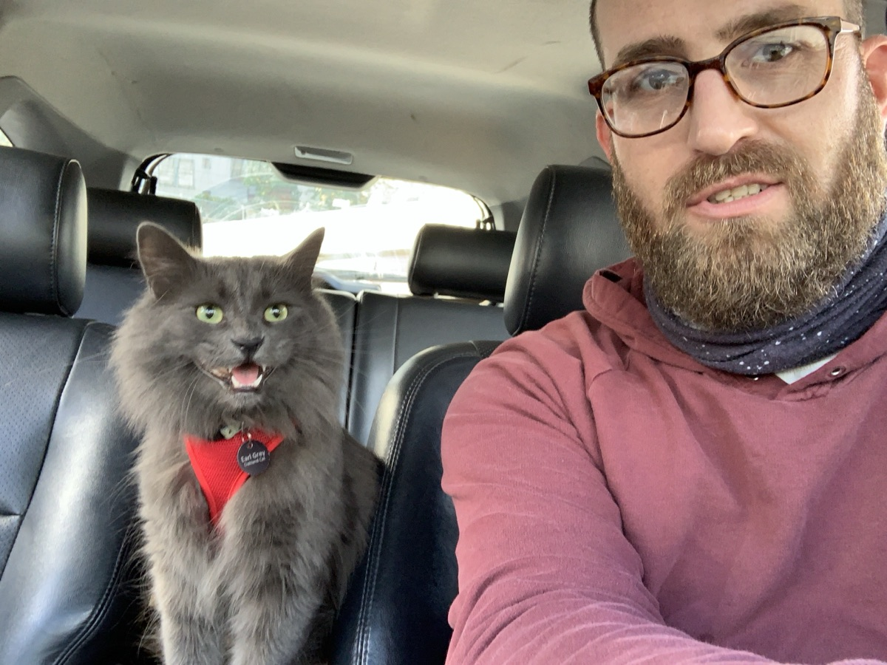

Earl Grey
is still missing.
He's a large grey long-haired Maine Coon mix with a blue-and-black checkered collar and a soft spot for spoon taps on a bowl. Please keep an eye out, and check yards, sheds, garages, and quiet hiding places near Cheyenne Ave & Maya Dr.
{kind=link}

How to recognize him
Many neighbors already know Earl by sight — but if you're new to the search, here's what sets him apart from other grey cats in the area.
- Blue-and-black checkered collar with a bell; no name tag
- A small notch missing from his right ear
- Long tail; loves rolling on the ground
- Responds to “Earl,” to spoon taps on a bowl, and can sit
- Microchipped with an active missing-pet alert — chip #XXXXXXXXXXXX5680
- HomeAgain Pet Recovery: 1-888-466-3242
Urgent medical — please read
He has bladder and dehydration issues.
If he's found, please offer wet food mixed with water only, and get him to us or a vet as soon as possible.
How you can help
A frightened missing cat can run, hide, or travel much farther than you'd expect — how you approach the moment you spot him matters.
Watch for an unfamiliar grey cat
Silver, grey Maine Coon or tabby-looking, or long-haired — near your home, neighborhood, business, or property.
Notice anything unusual
A stray collar, fur, signs an animal was trapped or injured, or evidence a cat entered a garage, shed, vehicle, or enclosed space.
Don't chase him
If you think it's Earl Grey, don't approach quickly. Keep your distance so he doesn't bolt farther away.
Document safely, then call
From a safe distance, get a photo or video, note the exact address or cross streets, the time, and which direction he went — then contact us right away.
Share this page
Or make your own post, so it reaches neighbors who haven't seen Earl's information yet.
Check the search map below
See where he was last seen and which areas are already covered, so new searching goes where it's needed most.
Where he went missing & where we've searched
Earl Grey went missing between Cheyenne Ave and Maya Dr. This map shows the wider search area, between N Central St and Cherokee St, along with the areas covered so far.
Earl Grey has been missing for
If you search a new area, please let us know so we can keep this map up to date for everyone helping.
Areas that need regular re-checking
These spots come up again and again in sightings and tips. If you're nearby, please keep an eye on them and let us know if anything changes.
- N Central St & E Pawnee Drive — this crossroad sits just a couple blocks away and marks a direct entry point into the nearby neighborhood park.
- Pawnee Neighborhood Park
- Four Corners Pipeline Area
- Southern and eastern intersection — monsoon park (green hole), the commercial plaza, backyards, etc.
- The Mohawk Wash — just north of Cherokee
- Local drainage channels
Earl Grey
Join Earl Grey's search party
Other pet parents in Kingman and Mohave County are searching for their animals too. If your pet is missing near where Earl went missing, we're always happy to help organize a search group.